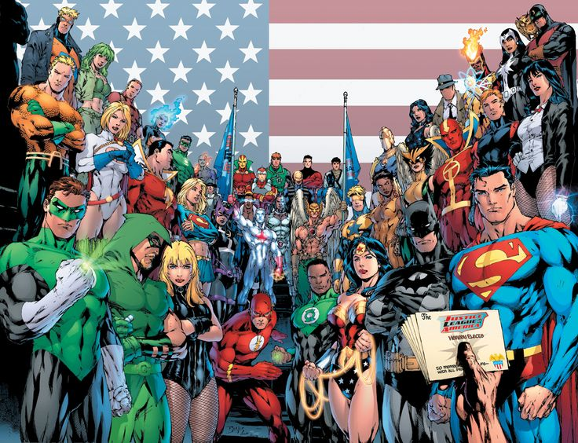
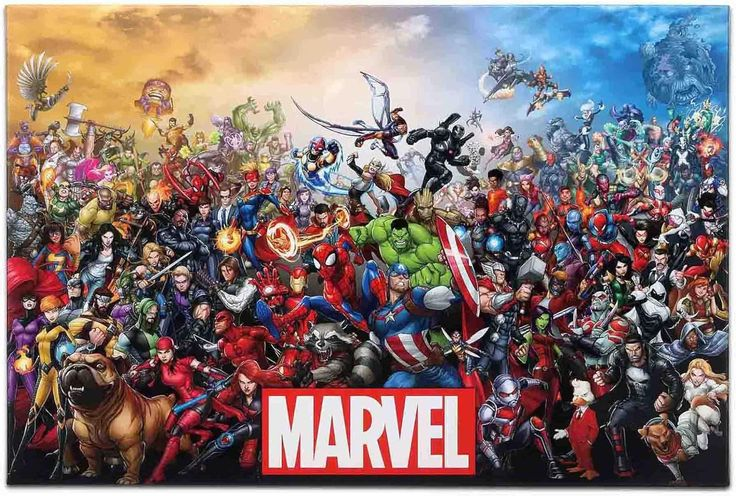
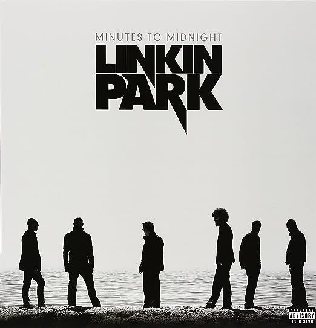
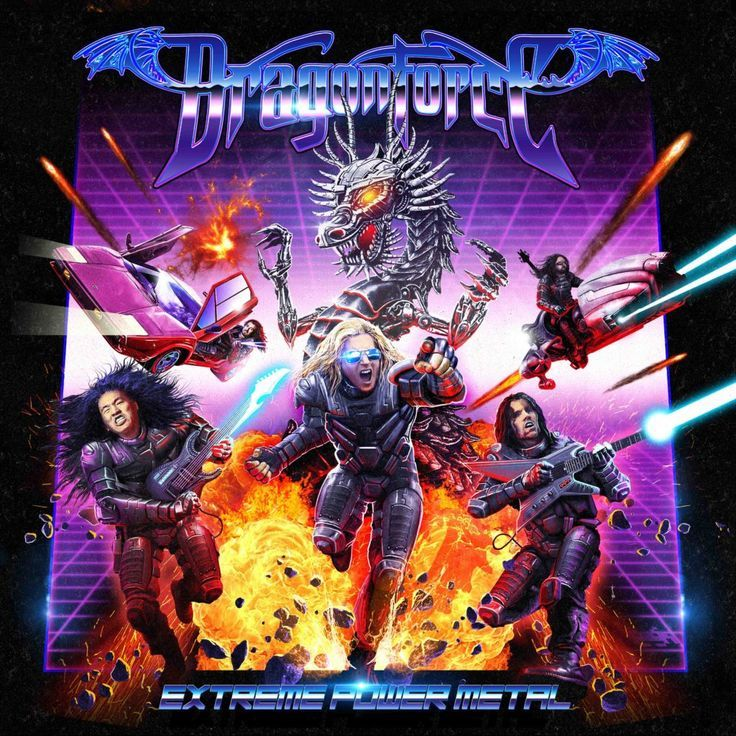
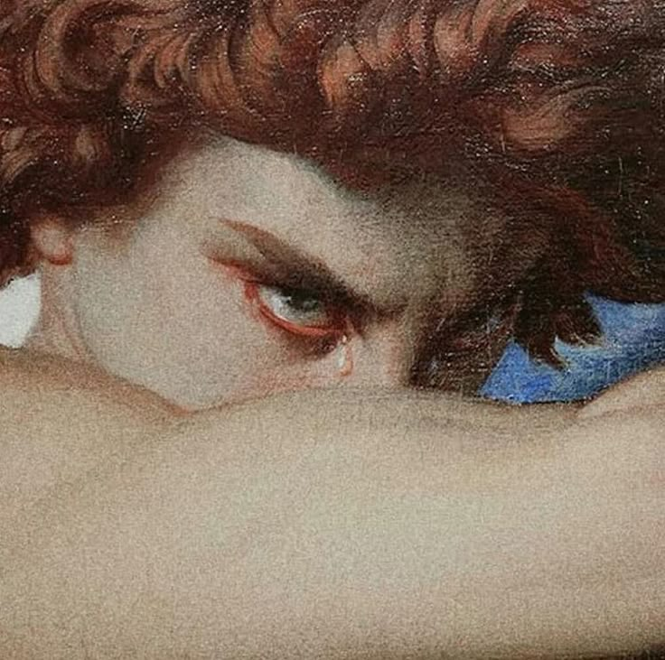
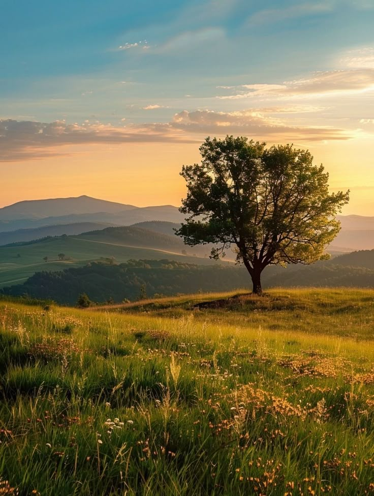

Alguns projetos em que me inspiro e gosto

DC
Inspiração em identidade visual, composição gráfica, e narrativa visual além de ser uma das industrias que eu mais gosto tanto cinamotografica, DBs e os desenhos animandos.
Inspiração em identidade visual, composição gráfica, e narrativa visual além de ser uma das industrias que eu mais gosto tanto cinamotografica, DBs e os desenhos animandos.

MARVEL
Inspiração em identidade visual, composição gráfica, e narrativa visual além de ser uma das industrias que eu mais gosto tanto cinamotografica, DBs e os desenhos animandos.
Inspiração em identidade visual, composição gráfica, e narrativa visual além de ser uma das industrias que eu mais gosto tanto cinamotografica, DBs e os desenhos animandos.

Linkn Park
Uma das minhas b andas favoritas, tanto pela música quanto pela estética visual dos videoclipes e capas de álbuns.
Uma das minhas b andas favoritas, tanto pela música quanto pela estética visual dos videoclipes e capas de álbuns.

Dragon Force
Banda de metal que admiro pela complexidade musical e pela arte visual dos seus álbuns.
Banda de metal que admiro pela complexidade musical e pela arte visual dos seus álbuns.

Pinturas renascentistas
Inspiração na arte clássica, com ênfase na técnica, composição e uso de cores.
Inspiração na arte clássica, com ênfase na técnica, composição e uso de cores.

Natureza
A beleza natural serve como uma fonte constante de inspiração para cores, formas e texturas.
A beleza natural serve como uma fonte constante de inspiração para cores, formas e texturas.